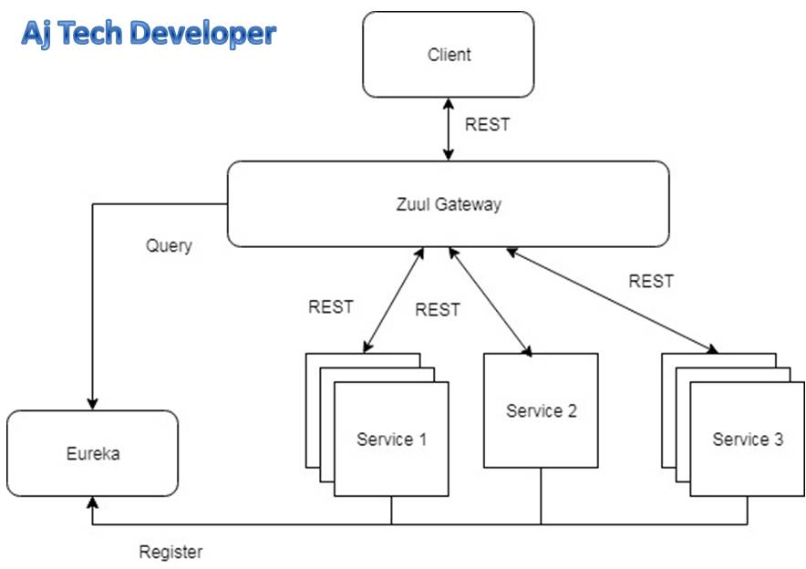
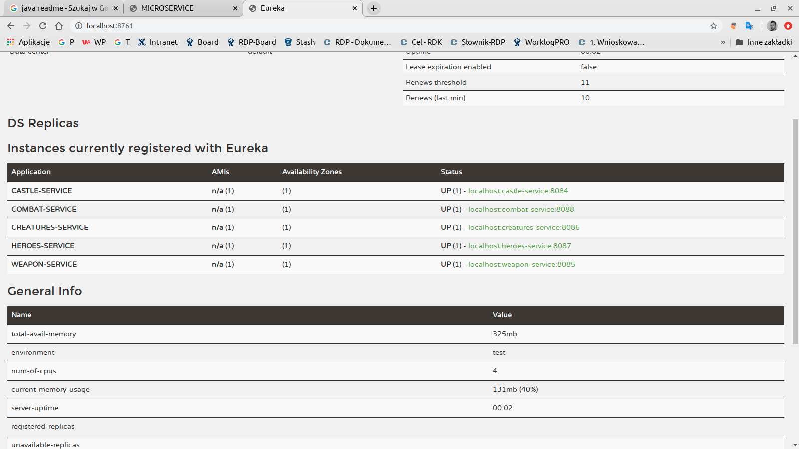

Przydatne linki:
Java Brains level 1Java Brains level 2
bykowski
Eureka Zuul PL
fault tolerance resilience
Architektura mikroserwisów
Architektura Mikroserwisów - Podzielenie tworzonej aplikacji na wiele modułów - aplikacja powstaje na skutek tworzenia wiele mniejszych aplikacji(niezależnych, luźno powiązanych) składających się na całość.
Mikroserwis - Najczęściej usługa webowa (ale niekoniecznie) z którą łączymy się protokołem HTTP. Luźno powiązana, samowsytarczalna, łatwo testowala usługa rozwiązująca jeden problem biznesowy. Mikroserwis powinien być jak najmniejszy i odpowiedzialny za jedną rzecz np. wyszukiwanie, reset hasła, weryfikacja adresu e-mail.
Każdy z mikroserwisów może być napisany w innym jezyku/technologii i różnej wersji. W monolicie cała aplikacja jeest napisana w jezdnym języku i jednej wersji
Mikroserwisy stosuje się w dużych projektach, w małych jest nieopłacalny
Mikroserwis jest bardziej odporny na awarię
Microservice = SOA + DDD
SOA (Servce-Oriented Architecture)- Architektura zorientowana na usługi polega na aplikacji w taki sposób, by można było z niej korzystać jako z zestawu usług, opublikowanych tak, by poziom szczegółowości był dostosowany do potrzeb konsumenta usługi.
DDD (Doamin-driven design) - Podejście do tworzenia oprogramowania kładące nacisk na takie definiowanie obiektów i komponentów systemu oraz ich zachowań, aby wiernie odzwierciedlały rzeczywistość. Dopiero po utworzeniu takiego modelu należy rozważyć zagadnienia związane z techniczną realizacją.
Zalety mikroserwisów:
- Odporoność na awarie
- Łatwość wprowadzania zmian
- Czytelność
- Możliwość mieszania techonologii

Service Discovery (Eureka) - steruje usługami mikroserwisu.W najprostszych słowach jest to serwis, który umożliwia rejestrowanie się nowych serwisów, jak i udostępnianie informacji o
zarejestrowanych użytkownikach. (link)
Warstwa abstrakcji zawierająca informację o każdym z Serwisów
m.in to gdzie jest zaimplemnetowana, za co odpowiada oraz czy ma awarie lub jest nadmiernie obciążona. Najpopularniejszą biblioteką jest Eureka
ze stajni Netflix
Load Balancer - pozwala na równoważenie obciążenia, jeśli jeden Serwis jest obciążany to to Load Balancer przekierowuje na inny mniej obciążony
Ribbon - Load Balancer po stronie klienta. W praktyce oznacza to, że ilość aktywnych instancji zwracana jest przez Service Discovery np. Eureka. Następnie wybór która usługa zwrócona przez Service Discovery zostanie wywołana, leży po stronie klienta. (link)
API Gateway (Zuul Gateway) link Jest punktem wejściowym naszej aplikacji, który przekierowuje żądania do odpowiednich serwisów w naszym środowisku.
Podsumowując eksponuje publiczne API.
Odpowiada za to aby skierować użytkownika do odpowiedniej usługi (serwisu),
Jedyna część aplikacji która rozmawia bezpośrednio
z użytkownikiem. Najpopularniejszą biblioteką jest Zuul (link)
Aby dodać Eureka Server należy:
Dodać poniższe zależności:
- Dodać zależność spring-cloud-starter-netflix-eureka-server
- Dodać zależność spring-cloud-starter-netflix-eureka-client
- Dodać annotation in main class @EnableEurekaServer
- Dodać annotation in main class @EnableEurekaClient
- eureka.client.fetch-registry=false
- eureka.client.register-with-eureka=false
- eureka.server.enableSelfPreservation=true
- eureka.server.renewalPercentThreshold=0.33
- server.port=8761
- Do Bean'a RestTemplate należy dodać adnotacje @LoadBalanced link
- prezjść pod adres localhost:8761
- example
Jeśli wszystko pójdzie ok to powinniśmy zoobaczyć Dashboard z podpiętymi Serwisami jak na obrazku ponieżej: (Może wymagać ponownego uruchomienia wszytskich serwisów):

Adresy endpointów na które wykonujemy zapytania możemy zmodyfikowac zastepując adres localhost:8086 na nazwę serwisu pod którą dany serwis jest zarejestrowany np:
"http://heroes-service/api/heroes/"
Fault tolerance i Resilience
The Fault Tolerant means the ability of an architecture to survive (tolerate) when an environment misbehaves by taking corrective actions, e.g, surviving a server crash or preventing a misbehaving API from bringing down the whole system, etc. The Fault Resilience is probably the capacity to recover from these type of scenarios quickly.
Fault tolerance: User does not see any impact except for some delay during which failover occurs.
Fault resilience: Failure is observed.But rest of system continues to function normally.
Mikroserwis nie działa - należy utworzyć dodtakwą instancje tego serwisu
Mikroserwis jest wolny - (zbyt dużo watków jest utworzonych - thread poll jest zapchany) - należy zastosowac timeout w RestTemplate
Circuit Breaker - mechanizm zarządzania awariami usług- Najpopularniejszą biblioteką jest Hystrix od Netflix.
Może zdarzyć się, iż usługa nie działa poprawnie, lub jest niedostępna. Wtedy “opakowujemy” naszą logikę odpowiedzialną za odpytywanie innych usług, jako komendę Hystrix’ową. W przypadku wystąpienia błędu, wywoływana jest metoda (ang. fallback method) odpowiedzialna za obsługę zdarzenia krytycznego. Jeśli dalej będziemy odpytywać niedziałającą lub wolno działającą usługę, na pewno jej to nie pomoże. Nasze kolejne odpytywania mogą jeszcze bardziej zwolnić usługę. Hystrix zapobiega takim praktykom. W momencie, gdy biblioteka widzi, iż usługa nie odpowiada lub działa niepoprawnie zostaje wtedy włączony bezpiecznik (ang. circuit breaker). Po włączeniu bezpiecznika automatycznie zwracana jest wartość metody fallback. Dzięki temu, usługa zewnętrzna ma czas na restart lub realizację zadań, co umożliwi jej ponowne poprawne działanie. Wyłączenie bezpiecznika następuję wtedy, gdy usługa, którą odpytujemy działa już poprawnie.
Bardzo ważnym aspektem związanym z pracą biblioteki Hystrix jest poznanie wartości domyślnych. Domyślny timeout dla commendy to jedna sekunda. Hystrix zbiera także statystki z ostatnich dziesięciu sekund w przesuwnym oknie czasowym. Na podstawie tych statystyk podejmowana jest decyzja czy włączyć bezpiecznik. Aby bezpiecznik się włączył (przejście w stan OPEN) w danym oknie czasowym musi być spełnionych kilka warunków:
- minimum 50 % żądań zakończonych niepowodzeniem
- tych żądań musi być minimum 20
Po włączeniu bezpiecznika wywoływana jest metoda fallback, jednakże nie trwa to w nieskończoność. Po okołu 5 sekundach nasz bezpiecznik przechodzi w stan HALF-OPEN, co oznacza, że jedno z żądań klienta zostanie wysłane to usługi. Jeśli działa ona poprawnie, nasz bezpiecznik się wyłącza (przechodzi w stan CLOSED).
Hystrix Dodajemy do aplikacji Client a nie do API!
Dodanie Hystix do Aplikacji Spring Boot:
- Dodajemy zależności: Hystrix, Dashboard,Actuator - "Dostarcza podstawowe metryki oraz informacje na temat aplikacji." ACTUATOR
- Dodajemy adnotacje @EnableCircuitBreaker do klasy głównej
- Dodajemy @EnableHystrixDashboard do klasy głównej
- application.properties - management.endpoints.web.exposure.include=hystrix.stream
- Dodajmy adnotacje @HystixCommand to methods that need circuit breakers
- Implementujemy metodę zastepczą (fallback method)
- Przejść na stronę localhost:xxxx/hystrix
Jeśli wszytsko pójdzie ok to powinniśmy zobaczyć strone Hystrix Dashboard link
Znajduje się tam pole w którym należy wskazać źródło dla którego ma być stworzony dashboard, wprowadzmy adres: http://localhost:8080/actuator/hystrix.stream i klikamy Monitor Stream.
Powinien ukazać się wykres i statystyki. Teraz najelpiej uruchomić testy i obserwować wyniki.
W skrócie - To co robi Hystrix to uruchamia metode zastepczą (fallback) w sytuacji gdy metoda główna nie odpowiada. link
Spring Cloud
Spring Cloud to projekt, który zrzesza pod wspólną nazwą dziesiątki różnych bibliotek i frameworków używanych w celu tworzenia aplikacji. tj: Ribbon, Eureka, Hystrix, Feign, Zuul i inne.
Jak sprytnie zarządzać konfiguracją kilkudziesięciu mikroserwisów, z których każdy może być uruchomiony w tym samym czasie w wielu instancjach? Z pomocą przychodzi Spring Cloud Config - jest to serwer, który pomaga zarządzać konfiguracją mikroserwisów.
Zamiast tworzyć oddzielny plik konfiguracyjny dla kazdego mikroserwisu zawierający tę samą implementację wystaczy utworzyć oddzielny serwis (projekt) który będzie zawierał plik konfiguracyjny dostępny dla wszytskich serwisów i umieszczenie go np. na GitHub.